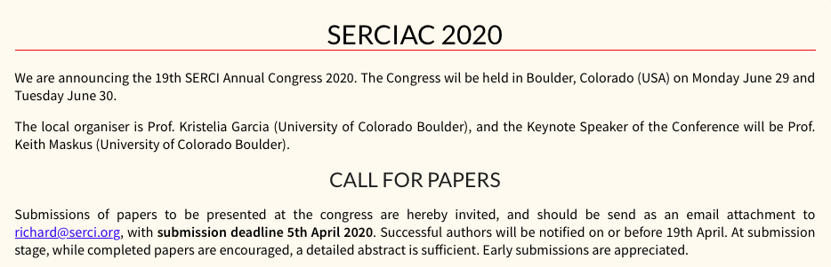
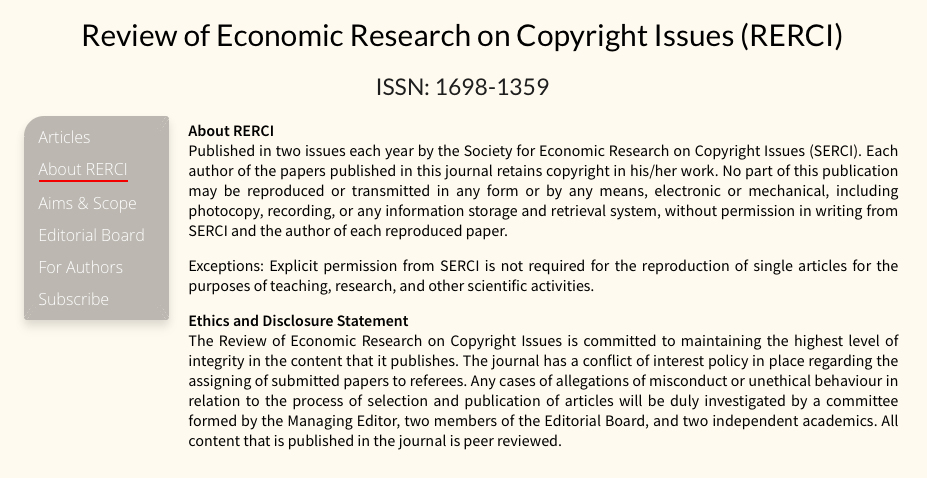

Why are we using liquid and jekyll?
When you upload a file or make a change to a file on the server with this application (the one you are currently using) the change isn't directly pushed to the server. There's a program called jekyll which puts everything into the correct form and then uploads those files to the server.
It might be easier to understand with an example of this. You'll notice that in your file browser there is no file for about_serci.html instead you'll find an about_rerci.md file. The ".md" extension stands for Markdown. However, on the actual server you'll see that the file is actually serci.org/about_rerci.html. This is because Jekyll takes the markdown file, reads the markdown and liquid code inside of it, and turns it into an html file for the server.
Liquid can do a lot of stuff, but we only need to know how to style our text and how to create top banners.
Some examples
Serci styles:
Take a look at this snippet of the first few lines from the old annual_congress.md file
---
title: Annual Congress
layout: default
---
# SERCIAC 2020
{:.heading-text}
{:style="border-bottom: 1px solid #E11C1A;"}
We are announcing the 19th SERCI Annual Congress 2020. The Congress wil be held in Boulder, Colorado (USA) on Monday June 29 and Tuesday June 30.
{:.body-text}
The local organiser is Prof. Kristelia Garcia (University of Colorado Boulder), and the Keynote Speaker of the Conference will be Prof. Keith Maskus (University of Colorado Boulder).
{:.body-text}
# CALL FOR PAPERS
{:.title-text}
{:style="margin-bottom: 0px;"}
Submissions of papers to be presented at the congress are hereby invited, and should be send as an email attachment to [richard@serci.org](mailto:richard@serci.org), with **submission deadline 5th April 2020**. Successful authors will be notified on or before 19th April. At submission stage, while completed papers are encouraged, a detailed abstract is sufficient. Early submissions are appreciated.
{:.body-text}
The output of the above code will look like this
You should already recognise some of this code from the markdown tutorial, for example: "[richard@serci.org](mailto:richard@serci.org)" and "# CALL FOR PAPERS".
But you'll notice that there's some new code, for example "{:.body-text}" "{:.title-text}". This is the liquid code we're about the learn about.
Putting "{:.body-text}" directly after some text styles that text into the serci style. Putting "{:.heading-text}" after a bit of text styles that text into the serci heading style. Should should only be using "{:.heading-text}" on bits of text that are also headings (i.e. using the markdown # to make it a heading). "{:.title-text}" is the equivalent of a subtitle style.
Top banners:
This is what I refer to as a top banner.
---
title: Annual Congress
layout: default
---
If this banner is not there, then jekyll will not read the file, so it's very important you include this banner if you create a new file. The most important section is the layout section. RERCI files will have the layout as "rerci", normal SERCI files will have the layout as "default". The title section simply specifies what the title in the browser tab should be. Here is an example of the top banner for the About RERCI file.
---
title: About RERCI
subtitle: ISSN: 1698-1359
layout: rerci
---
In the case of RERCI layouts, the subtitle is displayed on screen. You can see the "ISSN: 1698-1359" text is displayed as a subtitle here.
